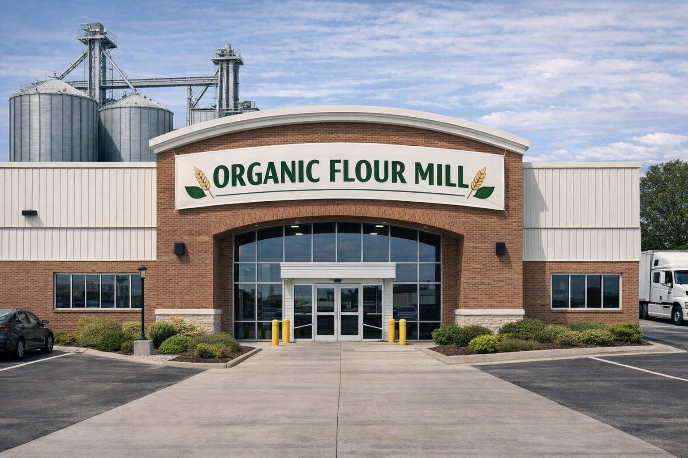
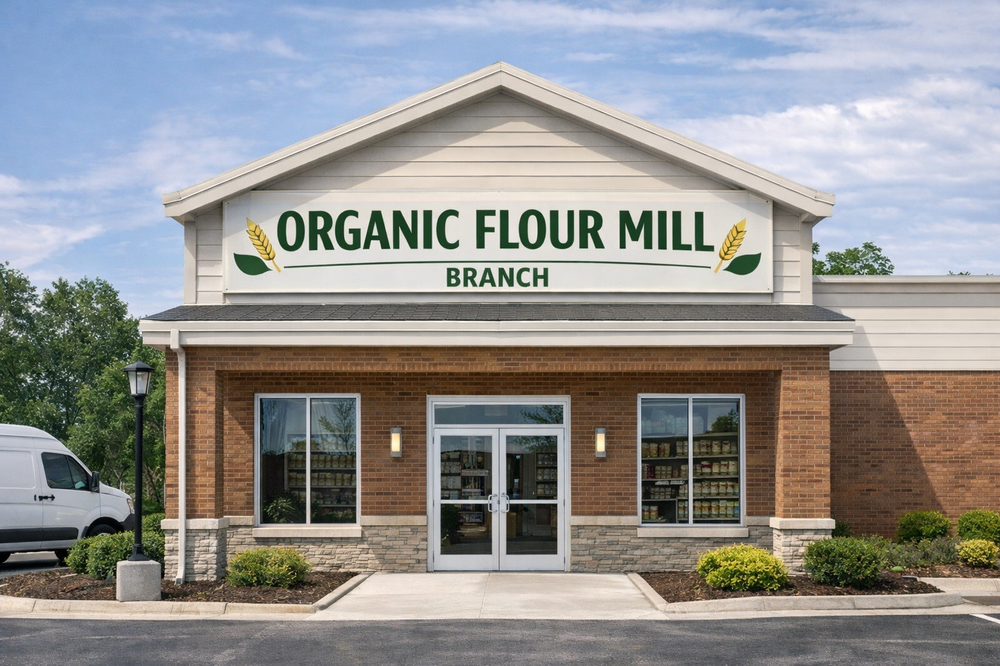
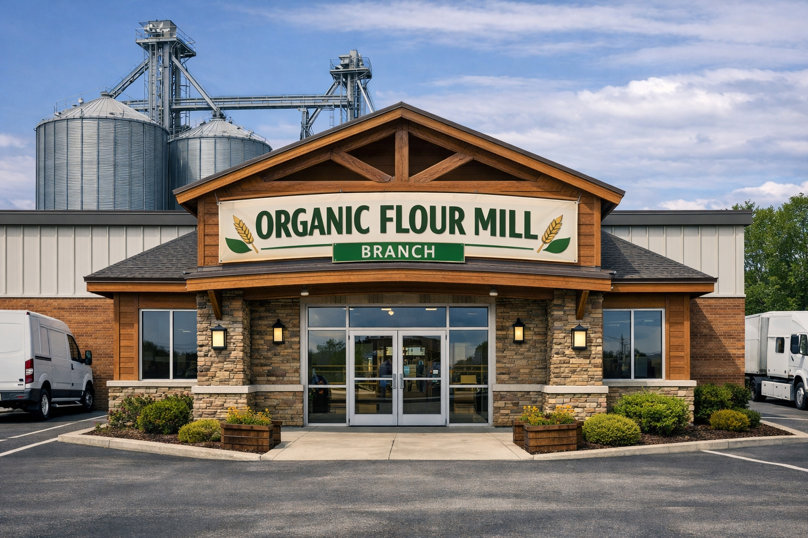
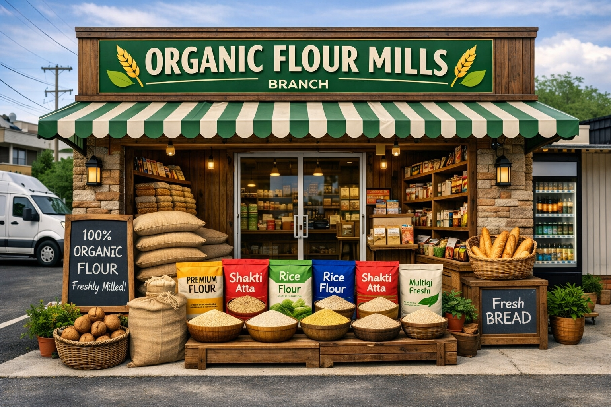

The Founder and the then Managing Director of our group Late Sri. A.R.Nachimuthu M.A.,C.A.I.I.B.,had a vast experience in banking sector. He served as the CEO of Cooperative Bank of Salem District for a period of 15 years.He held the post of the President of Tamilnadu Roller Flour Mills Association and also South zone comprising of three states, during which he had brought many reforms to the industry. He was a dynamic person and was appreciated for his bold and timely decision making in purchase and planning. Late Sri.S.R.Chenniappan, the past Managing Director of the company was the co-founder of the group, had an experience of 30 years in the industry. He had an in depth knowledge about technicalities of all the machineries since he was directly involved in erection of machineries. He had a vast experience in marketing from the commencement of this industry.
Mr.P.Gunasekaran B.E, MBA - JMD
Organic Flour Mill
Organic Flour Mill is pioneer in the field of Wheat product manufacturing. The group has been consistently at the forefront of quality wheat product manufacturing. Over a period of time the group has gained customer's reputation across Maharastra, Mumbai, Karnataka, Kerala,Tamil Nadu and its neighboring states by their high quality products. This Group's every single activity ensures Quality, Healthy and Tasty products to customers.

Organic Flour Mill Pvt Ltd

Organic Flour Mill Branch Two Pvt Ltd

Organic Flour Mill Branch Three Pvt Ltd
The company is manufacturing and marketing Wheat products such as Maida, Sooji,Atta and Wheat Bran in denomination of 50kg, 30kg and 10kg
Due to step increase in the demand for our products there emerged another mill in the name of Organic Flour Agro Foods Pvt Ltd.
This is a retail division marketing OFM brand retail pack Maida,Sooji,Atta in sku's of 1/2 kg,1kg,5kg Besides this, the company is marketing other products like Asfoetida, Rice flour, Gram flour, Bajji bonda mix, Semia, etc.
orgo-flour groups needs no introduction in south India. A household name for over 55 years in Karnataka and Bangalure, Organic Flours manufactures high-quality food products, including whole-wheat atta, maida & sooji.
Our products form a key ingredient in the daily diet of our consumers, and we are a trusted brand for home-makers and commercial establishments alike. All our products are available in convenient packaging sizes. For commercial users like bakeries and parotta stalls, the packaging size ensures consistent quality. Our range of whole-wheat products for home consumers are available in smaller packs, ensuring convenience.
Our valuable relationships with our distributors has allowed Kuthuvilakku to earn significant market share in the two key markets of Kerala and Tamil Nadu, where we are market leaders.

GEM of India Award
Government of India has extended the GEM OF INDIA AWARD in the appreciating the group’s obsession towards the quality of products manufactured and supplied.
To guarantee and produce the best flour in the flour milling sector To be competitive and innovative, whilst promoting our responsibility in food safety, nutrition and health To improve and strengthen the quality of the product by sustainable purchase of best quality of wheat To support these objectives by monitoring the output of our products by quality laboratory.
Production of high quality Products and selling at a reasonable price and Suppling within stipulated time limits according to the market demands.
Our common Missions and Values penetrate at all levels of our Organization. At our Flour Mill, we pride ourselves on providing our customers with the highest quality products on reasonable prices to meet the demands of today’s ever-changing Business Environment. We are always able to appreciate our client’s exact requirement thus providing safe and hygienic products that really are vital for their well being..
We always intend to build long term relationship with our customers, suppliers, and Employees who are our most important resources. We always seek to attract the best talent to meet the finest opportunities in our Company. Our endeavor is to maintain a profitable, effective and financially sound corporation in order to provide a secured and expanding future of our fellow employees. We maintain a safe and healthy environment to protect our people, clients and community.
Customers are the essence of our Business and therefore they always come first. We learn from them by listening to them on a regular basis. We always try to satisfy them and anticipate their wants with a sense of urgency. We will continue to provide our products with our best services at all times